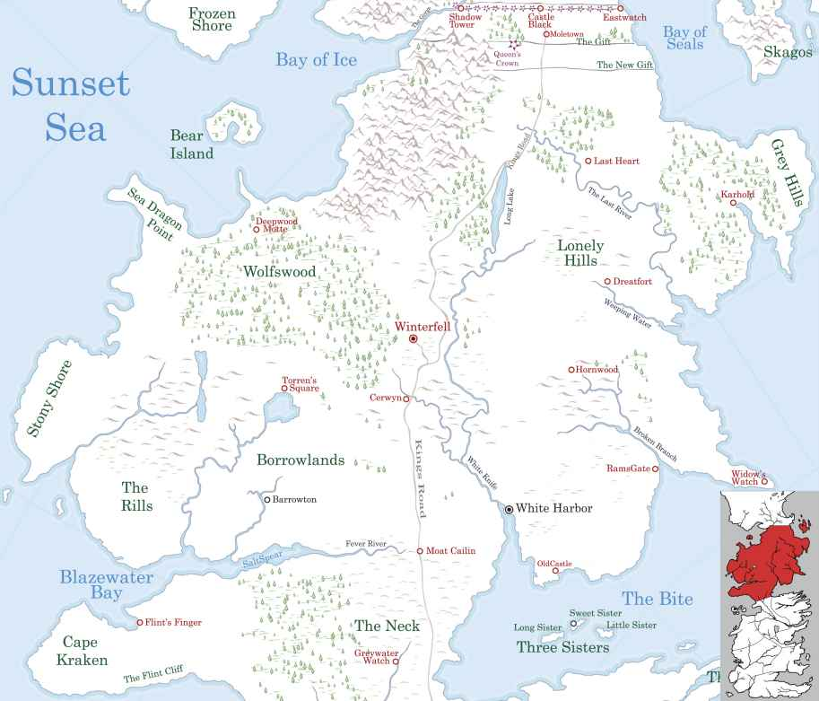

Bear Island
Bear Island is a remote island in the North that is home to House Mormont. It lies within the Bay of Ice.
The hall of the Mormonts is built of huge logs and surrounded by an earthen palisade. Aside from a few crofters, the inhabitants of Bear Island live along the coasts and fish the seas. On the gate there is a carving of a woman in a bearskin with a babe suckling at her breast in one arm and a battleaxe in the other.
Before the ironmen conquered the island, it was ruled by House Woodfoot. Because of this the coat of arms of the house ruling the Ironborn at that time has a green tree in the 2nd quarter as a reference to their possession of Bear Island. The island became part of the North during the reign of Rodrik Stark, supposedly as a result of a wrestling match. Rodrik Stark then gave the island to House Mormont. (More On Next Page)
In days past, the ironmen or wildlings from the Frozen Shore would raid Bear Island and the men would be fishing out to sea. The women would defend the island while the men were away. This created a warrior culture even among the women.
